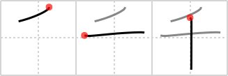

千
← →
thousand

Reading:
On-Yomi: セン — Kun-Yomi: ち
Heisig story:
This kanji is almost too simple to pull apart, but for the sake of practice, have a look at the drop above and the ten below. Now put the elements together by thinking of squeezing two more zeros out of an eyedropper alongside the number ten to make it a thousand.
Koohii stories:
1) [Branduil] 26-2-2006(136): It takes many drops of ten to get to a thousand.
2) [toddiceton] 4-11-2008(108): One T = one thousand.
3) [dat5h] 15-7-2008(39): 1000 = 10^3 (3 strokes).
4) [DanielC] 13-7-2008(34): The primitives of drop and needles are at work here. One drop from this needle could save thousands of lives!
5) [Robatsu] 11-1-2009(26): The number ten bought a fancy hat for a THOUSAND yen!